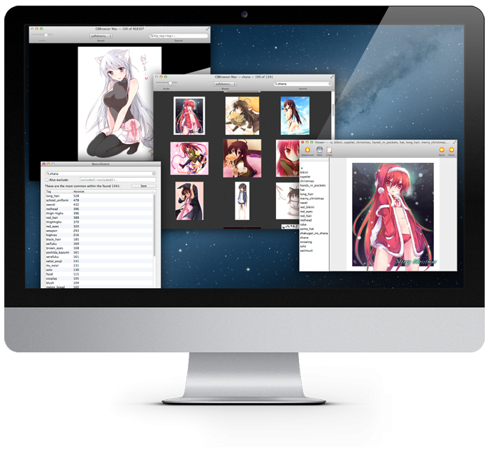
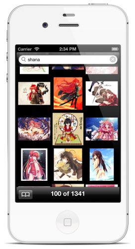
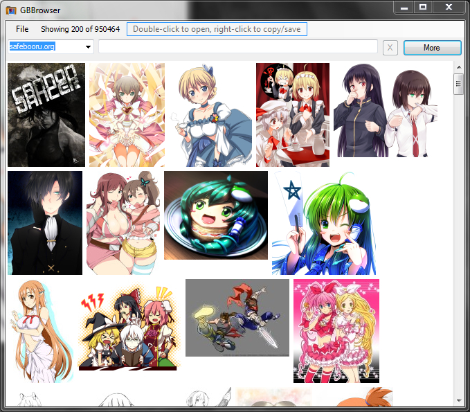

GBBrowser

The most advanced imageboard toolkit.

Grab it now
View source
GBBrowser:Mac. This is the otaku heaven.
Browse and search in Cover Flow, perform statistical analysis of character appearances and finally, show off your favourite ones as a screensaver. Moreover, this is not another half-working cross-platform app. It was crafted with care foreach platform to achieve best performance and UX.

 View source
View source
GBBrowser:Mobile. Everywhere you go.
A minimalistic yet powerful anime art viewer. Right in the palm of your hand.
View source

Download
View source
GBBrowser:Windows. Legacy version.
Sadly I can't keep up with developing the Windows version right now. Feel free to use the old version and edit the source code.